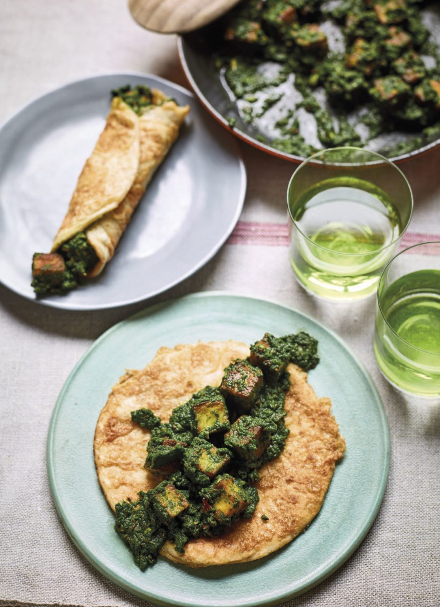

Nadia's Kati Rolls

Kati rolls are a common street food back in my parents’ homeland, where they are often filled with grilled meats and piquant salads. Keen to make a vegetarian version of the delicious kati roll at home, here I’ve filled a crisp egg-fried tortilla with creamy spinach and paneer. It makes a great snack or something to eat on the side. There is something about that vibrant green that makes me pleased it’s not in smoothie form!
Ingredients
- 3 tbsp olive oil
- 226 paneer
- 150g spinach leaves
- 150ml water
- 4 cloves garlic
- 1 tsp cumin seeds
- 1/2 tsp chilli flakes
- 1/2 tsp salt
- 2 eggs
- 1 pinch sale
- 4 small tortilla wraps
Instructions
- Put a non-stick saucepan on a medium heat with 2 tablespoons of the oil. As soon as the oil is hot, add the paneer and fry for 5 minutes, stirring occasionally. You want to colour the paneer as much as possible.
- Put the spinach leaves and water into a blender and whiz to a smooth paste. Add a splash more water if needed, to blend smoothly.
- Take the paneer out of the pan with a slotted spoon and set aside. Add the remaining tablespoon of oil and the garlic to the pan and cook for a minute, until the garlic is light brown.
- Add the green mixture, along with the cumin seeds, chilli flakes and salt, and cook on a medium heat for 5 minutes, until some of the water from around the edge has reduced and the mixture has thickened.
- Add the paneer to the pan and mix well, making sure all the cheese is covered in green. Pop a lid on the pan and leave on a low heat while you make the rolls.
- Put a small frying pan on a high heat and add a good glug of oil, enough to cover the base.
- Break the eggs into a very shallow bowl with the salt and lightly whisk – the bowl needs to be flat enough to be able to dunk the tortillas. Dip a tortilla into the egg mixture, making sure to cover it all over. Get it straight into the frying pan. The oil should be hot enough to really create a sizzle. Cook for just 30 seconds, then turn it over and cook on the other side. Now cook the other 3 tortillas the same way.
- To serve, add the paneer mixture to the centre of a hot crispy tortilla, and roll up. Not like a burrito, but the way a kid would make a roll for the first time. If you don’t have cheese falling out one end, you’re doing it wrong!